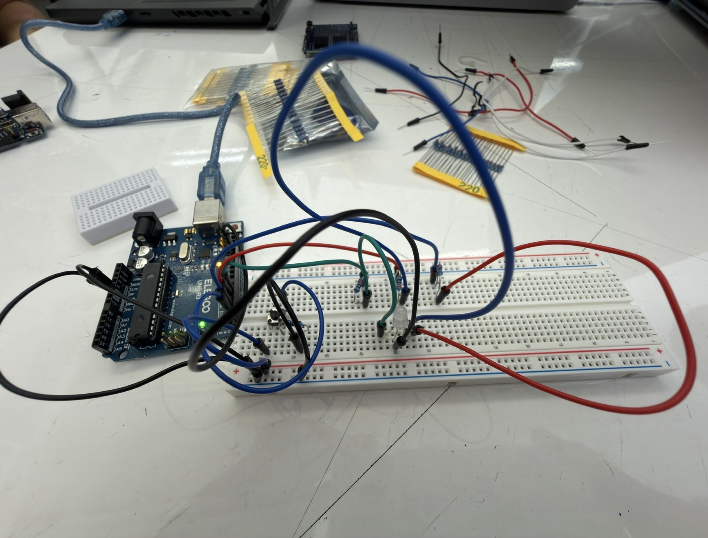

This assignment builds a multi‑LED circuit controlled by a physical input (button or tilt switch) and Arduino code that uses a for‑loop, digitalWrite(), digitalRead(), and analogWrite() (PWM). You will document the schematic, breadboard circuit, firmware, and an animated GIF of the behavior. Explanations include resistor choices (LEDs and button), battery‑life estimate, and a measured vs. theoretical LED forward‑voltage comparison.

This image shows my breadboard circuit with three LEDs and a button connected as described in the schematic. The white LED is made up of three separate LEDs combined.